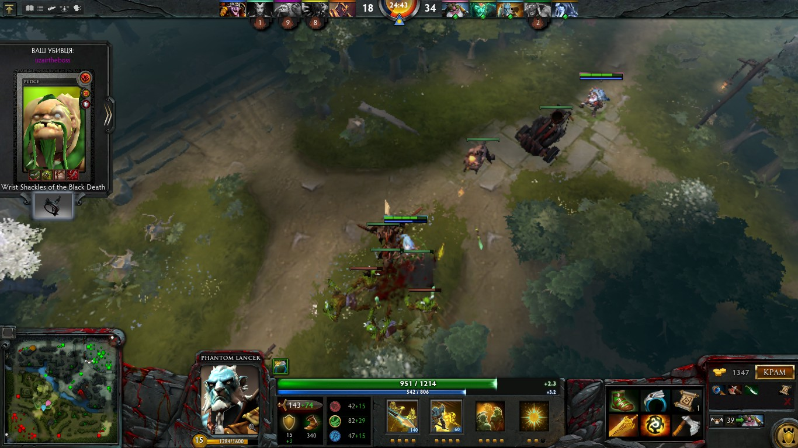
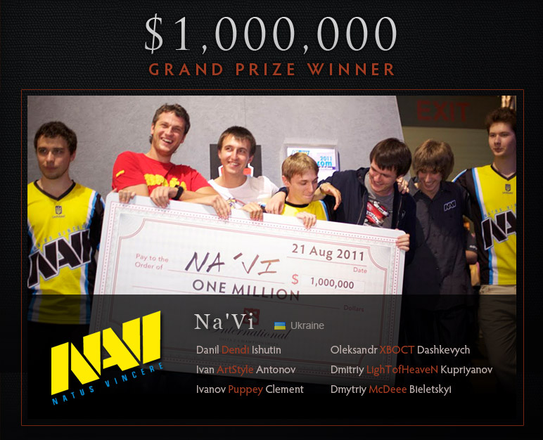
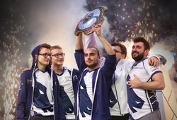
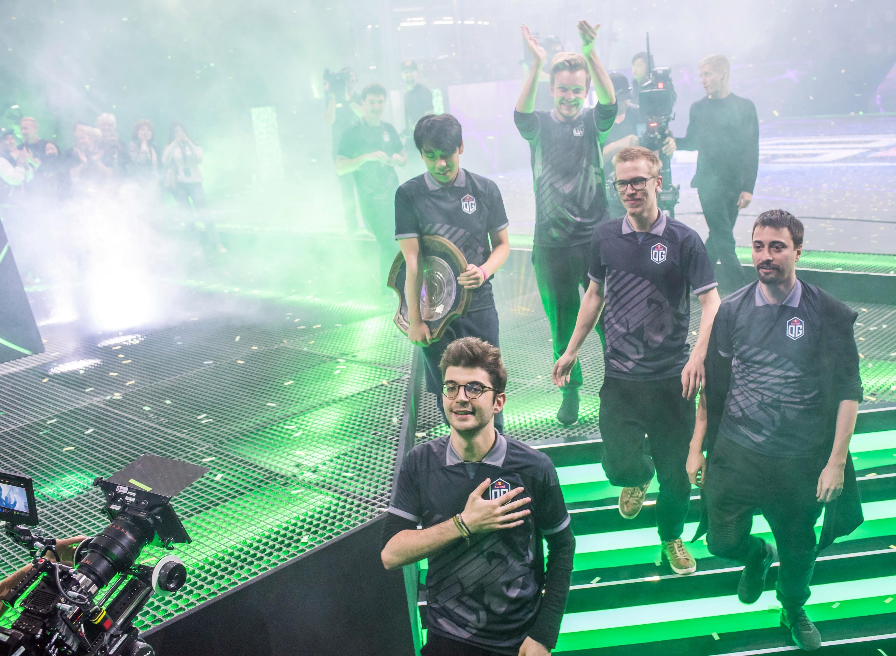

Ігровий процес
Основи
Dota 2 — командна онлайн гра у жанрі MOBA. Ігровий процес будується навколо боротьби двох команд по п'ять героїв, кожен з яких контролюється одним із гравців. Кожна команда має свій табір: у правому верхньому куті мапи розташовується Темна сторона (The Dire), у лівому нижньому — Світла сторона (The Radiant).
Гра проходить у вигляді окремих партій, жодна з попередніх партій не впливає на майбутні. Для участі в партії гравець має розпочати пошук доступної гри. Коли на певному сервері набереться 10 гравців приблизно однакового рівня майстерності, партія розпочинається. На початку партії кожен гравець гравець має вибрати одного з доступних героїв. Після того, як усі гравці оберуть собі героя, вони з'являються на карті й починається боротьба. Перемогою вважається знищення головної споруди на ворожій базі — Древнього (англ. Ancient, на ігровому сленгу — трон).
Герої — основа гри Dota 2, саме їхні дії визначають результат партії. Кожен із героїв має особливі навички та здібності та дерево талантів, які визначають їх роль і застосування в грі. Для досягнення мети герої протягом партії здобувають досвід і золото, знищуючи ворогів, зокрема — кріпів — ігрових істот, що контролюються штучним інтелектом і діють за встановленим алгоритмом. Здобутий досвід дає можливість героям підвищити рівень розвитку, що дає їм додаткові вміння або посилює ті, якими вони вже володіють.
Режими гри
| Назва режиму | Опис |
|---|---|
| All Random | Кожному гравцю дається випадковий герой. |
| All Pick | Гравцю доступні всі герої, яких ще не обрали інші гравці. |
| Single Draft | Гравцю дається на вибір три випадкових героя. |
Сюжет
Тривалий час Dota 2 не мала сюжетного режиму, проте у червні 2017 року Valve впровадили його у формі низки завдань, які гравці мусять виконувати разом. Він доступний тільки тим гравцям, що придбали «бойову перепустку» (англ. Battle Pass).
Сюжетну кампанію під назвою «Siltbreaker» поділено на два акти. Перший отримав назву «Піски Долі» (англ. The Sands of Fate) і присвячений пригодам у підводній в'язниці «Темний риф» (англ. Dark Reef), де герої мусять завадити звільненню злої сили.
Розробка
Розробка Dota 2 почалась 2009 року, коли Valve Corporation найняла IceFrog'а як головного дизайнера гри. Ігрові критики схвально оцінили графічні можливості гри та геймплей, а також те, що розробники зберегли основну механіку DotA. Серед недоліків гри було відзначено погано розроблену систему навчання, а також не надто люб'язну спільноту. DotA 2 стала найпопулярнішою грою в Steam, зі щоденним онлайном близько 800 000 осіб.
Турніри з Dota 2
Dota 2, як і її попередниця DotA, є кіберспортивною дисципліною. Ще під час бета-тестування було проведено кілька великих турнірів, найбільшим з яких є The International, на території СНД популярним є турнір Starladder, також існує велика кількість регіональних турнірів та дрібних аматорських турнірів.
The International
Докладніше: The InternationalУ перші дні бета-тестування на кіберспортивому чемпіонаті GamesCom було проведено турнір The International у дисципліні Dota 2, організований самою Valve. На ньому змагалися 16 найкращих команд світу, а сума призових була становила 1,6 млн доларів США. Переможцем турніру, а також власником одного мільйона доларів, стала українська команда Natus Vincere (Na'Vi).
The International 2015 пройшов із 3 по 8 серпня 2015 року в Сієтлі. Україну знову представляла Natus Vincere.
У 2017 на турнірі The International 2017 перемогла команда Team Liquid, вигравши більше $10 млн
У 2019 на турнірі The International 2019 перемогла команда OG, вигравши $15 млн
